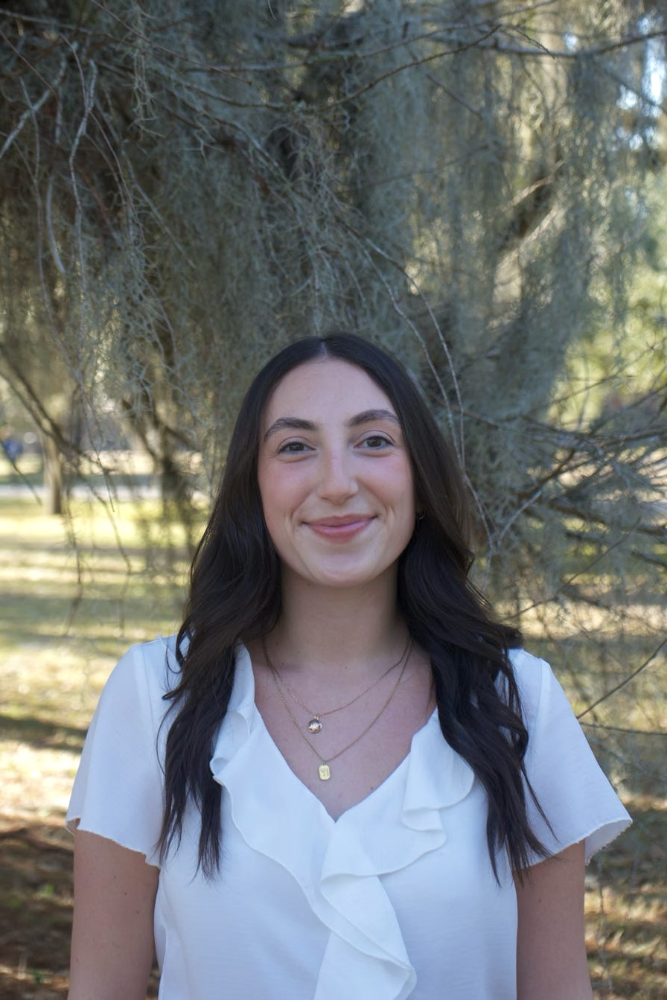
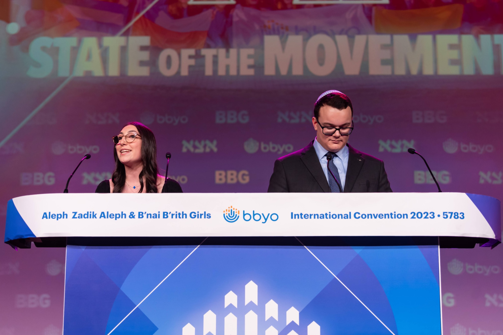

Hi, I’m Avi Gorodetski
I bring people together and ideas to life.
I build teams, programs, and experiences that make people feel part of something. My work spans a social-impact startup, global youth leadership, campus programming, and client service.
Tulane University · Sociology & Social Policy & Practice · Class of 2027

$15KGiVV pitch win
200+TUCP members
25Countries in BBYO’s teen leadership network
Selected work / 01
The work, up close.
Different roles, one throughline: connect people, find a way forward, and make it happen.

Entrepreneurship / 2026
GiVV
Building a more social, accessible way for students to support local nonprofits.
Read the story
Global leadership / 2022–23
BBYO
Leading a 1,200+ teen network across 25 countries.
Read the storyTULANE UNIVERSITY
CAMPUS PROGRAMMINGEST. 1957
CAMPUS PROGRAMMINGEST. 1957
TUCP
Campus experiences / 2026–27
For the whole campus.
Leading a 200+ member organization and a $450K programming budget.
See the experienceWhat’s next
Let’s make something meaningful.
I’m interested in strategy, social impact, philanthropy, and the kind of work where big ideas need people who can make them real.
Get in touch